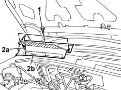

7055A18 Windscreen base TRIM - R.R.
- Path
- Procedures > 70 FITTINGS > 7055 MOULDING AND PROTECTION > 7055A exterior mouldings > 7055A18 Windscreen base TRIM - R.R.
- Kind
- repair procedure (removal / refitting; the operation number is the code)
- Applies to
- all engines; all production periods
- Interactive page
- https://sloeber94.github.io/elrnDB-fDbl/en/#/2585214
Applies to: all engines; all production periods
 Removing
Removing
 Refitting
RefittingOp. 5050B34 WINDSCREEN WIPER ARM/S COMPLETE WITH BLADE - R+R
1. Undo the upper bolts fixing the grille.
Open the bonnet
2. Undo the lower fixing bolts (2a) and remove the grille (2b).
Carry out the same operations for the remaining grille.

Applies to: all engines; all production periods
Refitting
RemovingPosition the grilles and tighten the lower fixing bolts.
Close the bonnet and tighten the upper fixing bolts.
Op. 5050B34 WINDSCREEN WIPER ARM/S COMPLETE WITH BLADE - R+R
Topics linked from this page (1)
Topics that link to this page (8)
- 1058A80 cng injection unit control unit - r r
- 1058A90 cng injection wiring harness - arrange
- 1056B82 injection/ignition system e.c.u. (one) - r + r
- 5050B38 windscreen wiper assembly - r+r or repair
- 5505C26 bonnet wiring - r r
- 5505C28 intergrated engine bay and abs system wiring - r r
- 7035A18 windscreen glass r r including cleaning of housing
- 7210E22 R.R. WINDSCREEN BASE TRIM